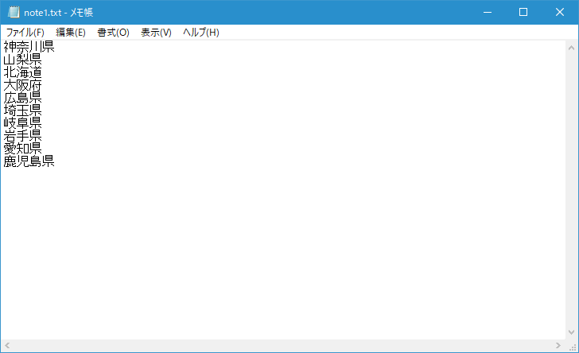
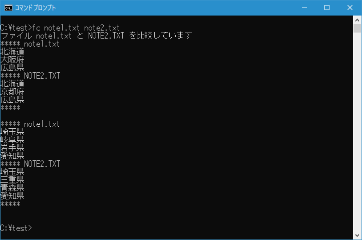
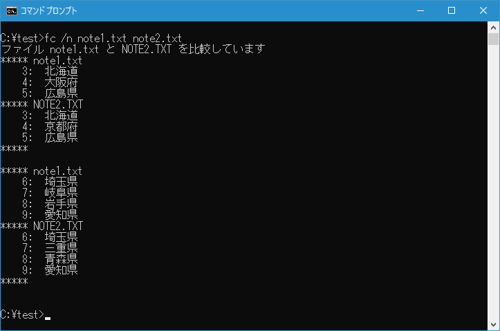

ファイルの内容を比較して違いを表示(FC)
2つのファイルの内容を比較して違っている個所を表示することができる FC コマンドの使い方について解説します。
FCコマンドの使い方
FC コマンドは2つのファイルの内容を比較し違いを表示することができます。テキストモードとバイナリモードがありますが、ここではテキストモードについてのみ見ていきます。書式は次の通りです。
FC [/A] [/C] [/L] [/LBn] [/N] [/OFF[LINE]] [/T] [/U] [/W] [/nnnn]
[ドライブ1:][パス1]ファイル名1 [ドライブ2:][パス2]ファイル名2
オプションがいくつかありますが、基本的な構文は次の通りです。
FC ファイル名1 2
では実際に使い方を見ていきます。
2つのファイルを比較する
FC コマンドのテストを行うために次の2つのファイルを用意しました。


4行目、7行目、8行目が異なっています。
カレントディレクトリにある note1.txt と note2.txt を比較し、違いを表示するには次のように実行します。
fc note1.txt note2.txt
FC コマンドを実行すると2つのファイルを行単位で比較し、違っている行を表示します。

違っている行が見つかった場合、その前後の行と合わせて表示します。違っている行が見つかり、2行以内にさらに違っている行が見つかった場合にはまとめて表示します。
行番号を付けて違いを表示する
2つのファイルを比較し、違いを表示する時に行番号を表示するには「/N」オプションを付けて次のように実行します。
fc /n note1.txt note2.txt
FC コマンドを実行すると2つのファイルを行単位で比較し、行番号を付けて違っている行を表示します。

-- --
FC コマンドを使って2つのファイルの違いを表示する方法について解説しました。
( Written by Tatsuo Ikura )

著者 / TATSUO IKURA
初心者～中級者の方を対象としたプログラミング方法や開発環境の構築の解説を行うサイトの運営を行っています。